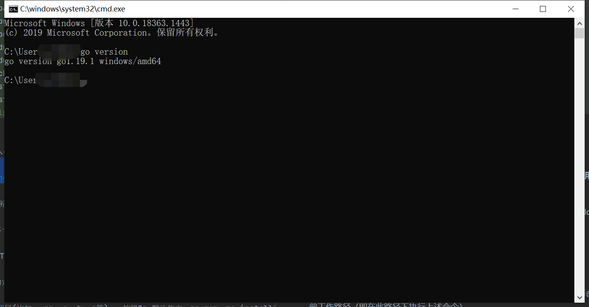

要用Go语言来进行开发，需要先搭建开发环境。Go 语言支持以下系统：
- Linux
- FreeBSD
- Mac OS
- Windows
首先需要下载Go语言安装包，Go语言的安装包下载地址为：https://golang.org/dl/ ， 国内可以正常下载地址：https://golang.google.cn/dl/
源码编译安装
Go语言是谷歌2009发布的第二款开源编程语言。经过几年的版本更迭，目前Go已经发布1.19版本，UNIX/Linux/Mac OS X，和 FreeBSD系统下可使用如下源码安装方法：
（1）下载源码包：https://golang.google.cn/dl/go1.11.1.linux-amd64.tar.gz （2）将下载的源码包解压至 /usr/local目录： tar -C /usr/local -xzf go1.19.1.linux-amd64.tar.gz （3）将 /usr/local/go/bin 目录添加至PATH环境变量： export PATH=$PATH:/usr/local/go/bin （4）设置GOPATH，GOROOT环境变量： GOPATH是工作目录，GOROOT为Go的安装目录，这里为/usr/local/go/
注意：MAC系统下你可以使用 .pkg 结尾的安装包直接双击来完成安装，安装目录在 /usr/local/go/ 下。
Windows系统下安装
Windows系统可以选择go1.19.1.windows-amd64.msi，双击运行程序根据提示来操作。 地址：https://dl.google.com/go/go1.19.1.windows-amd64.msi
下载之后直接点击安装，一步步继续即可。
GOPATH是我们的工作目录，可以有多个，用分号隔开。
GOROOT为Go的安装目录。
Win+R打开CMD（注意：设置环境变量后需要重新打开CMD），输入 go ，如下显示说明Go语言运行环境已经安装成功：
Go is a tool for managing Go source code.
Usage:
go <command> [arguments]
The commands are:
bug start a bug report
build compile packages and dependencies
clean remove object files and cached files
doc show documentation for package or symbol
env print Go environment information
fix update packages to use new APIs
fmt gofmt (reformat) package sources
generate generate Go files by processing source
get add dependencies to current module and install them
install compile and install packages and dependencies
list list packages or modules
mod module maintenance
work workspace maintenance
run compile and run Go program
test test packages
tool run specified go tool
version print Go version
vet report likely mistakes in packages
Use "go help <command>" for more information about a command.
Additional help topics:
buildconstraint build constraints
buildmode build modes
c calling between Go and C
cache build and test caching
environment environment variables
filetype file types
go.mod the go.mod file
gopath GOPATH environment variable
gopath-get legacy GOPATH go get
goproxy module proxy protocol
importpath import path syntax
modules modules, module versions, and more
module-get module-aware go get
module-auth module authentication using go.sum
packages package lists and patterns
private configuration for downloading non-public code
testflag testing flags
testfunc testing functions
vcs controlling version control with GOVCS
Use "go help <topic>" for more information about that topic.
另外，我们输入go version，可看到我们安装的Go版本，如图所示：

GOPATH允许多个目录，当有多个目录时，请注意分隔符，多个目录的时候Windows是分号;
当有多个GOPATH时默认将go get获取的包存放在第一个目录下。
GOPATH目录约定有三个子目录
- src存放源代码(比如：.go .c .h .s等) 按照Go 默认约定，go run，go install等命令的当前工作路径（即在此路径下执行上述命令）。
- pkg编译时生成的中间文件（比如：.a）
- bin编译后生成的可执行文件，接下来就可以试试代码编译运行了。
文件名: hello.go，代码如下：
package main
import "fmt"
func main() {
fmt.Println("Hello, World!")
}
使用go命令执行以上代码输出结果如下：
D:\go-learn-notes> go run 基础语法/环境安装/hello.go
Hello，World!
1.2 Go语言开发工具
GoLand

GoLand 是 JetBrains 公司推出的 Go 语言集成开发环境，与我们用的 WebStorm、PhpStorm、PyCharm 是一家，同样支持 Windows、Linux、macOS 等操作系统。
下载地址：https://www.jetbrains.com/go/
软件是付费的，不过想想办法，软件可以永久激活的。
学习网址
- Go语言：https://golang.org/
- Go语言中文网：https://studygolang.com/
- Go语言包管理：https://gopm.io/